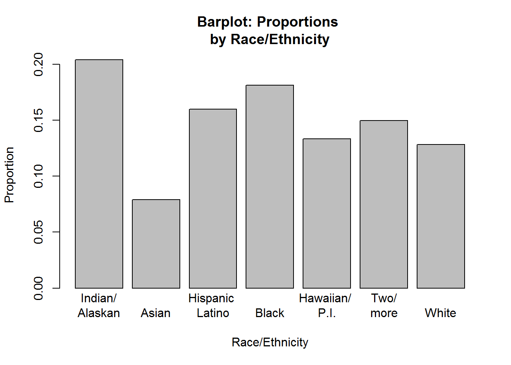
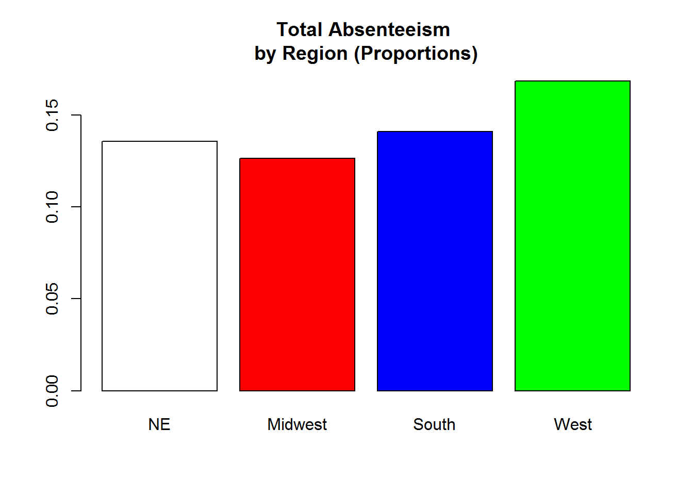

Data for this project were collected from https://ocrdata.ed.gov/StateNationalEstimations/Estimations_2013_14 from the U.S. Department of Education (ED.gov). These data pertain to the school year (SY) 2013-14 and were collected from approximately 16,500 school districts and 96,500 elementary, middle, and high schools. For this project, two data files were utilized: the SY 2013-14 Estimations for Enrollment data set, and the SY 2013-14 estimations for Student (chronic) Absenteeism.
While there were no missing data recorded in these data sets, it should be noted that the state of West Virgina reported “1 to 3” students with chronic absenteeism in the ethnicity category of Native Hawaiian or Other Pacific Islander. For this project, I had estimated the number of observations to be the average of 2 (in a real-life data analysis scenario, missing data or estimated data may need further examination for imputation methods).
More information regarding the documentation of the data collection can be found here[3].
Because the raw count for the data were not of interest for the study (that is, just looking at the raw data count alone will not indicate anything meaningful, as minorities will tend to have a lower raw count from the fact of having less students in the population), proportions were the key observation unit of focus. Both data sets of Student Absenteeism and Enrollment for SY 2013-14 had nearly 100% participation, most likely because these data were collected by the government and were necessary for the schools to record; the lowest percentage of participants was in the data set for chronic absenteeism in the state of Tennessee (98.4%). Therefore, the two data sets were combined to calculate the proportions for each race and the total proportion of absenteeism, by state. States were categorized by region, as per the U.S. Census Bureau census regions [4].
The graph below depicts the mean proportions of each race/ethnicity for the whole data set. Data are aggregated at the state level. 
To gain a basic understanding, chronic absenteeism by each region was also initally examined: 